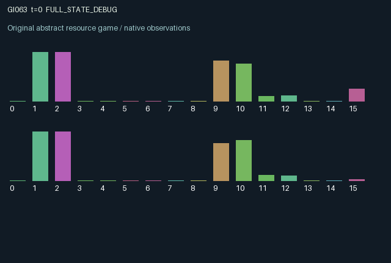

GI063 / LEGACY_ARRAY
astra-d2-00063: Cross-pollination, complementary growth stages, and seed recycling
2 agents5 actions16 observation columns32 original horizonRuntime: PASS
Release verification episode
Untrained uniform legal actions. Actual JAX state sampled along the full original episode; full-state debug camera. No human performance or learning claim.

Run this game
crucibles play --game 63
Start Python locally, then open the address printed by the terminal. Installation, multiplayer, takeover and keyboard controls →
Objective, rewards & ending
Exact task contract
{
"objective": "Accumulate original per-agent rewards under the interaction rules in mechanism.md.",
"natural_termination": "No early terminal; original t >= 32 horizon.",
"exact_transition_and_reward_source": "def raw_step(self, key, state, actions):\n harvest = jnp.where(actions == 1, jnp.minimum(state[\"fruit\"], 0.5), 0.0)\n planted = jnp.where(actions == 2, jnp.minimum(state[\"seeds\"], 0.3), 0.0)\n watering = (actions == 3).astype(jnp.float32)\n clearing = (actions == 4).astype(jnp.float32)\n rainfall = jax.random.uniform(key, (), minval=0.02, maxval=0.06, dtype=jnp.float32)\n maturation = 0.4 * state[\"immature\"] * state[\"moisture\"] * state[\"fertility\"]\n fertilized = jnp.minimum(state[\"flower\"], 0.85 * state[\"pollen\"]) * state[\"moisture\"] * (1.0 - 0.55 * state[\"pest\"])\n next_state = {\n \"t\": state[\"t\"] + jnp.array(1, dtype=jnp.int32),\n \"seeds\": jnp.clip(state[\"seeds\"] - planted + 0.65 * harvest, 0.0, 1.0).astype(jnp.float32),\n \"immature\": jnp.clip(0.98 * state[\"immature\"] - maturation + planted, 0.0, 1.0).astype(jnp.float32),\n \"flower\": jnp.clip(0.94 * state[\"flower\"] + maturation - fertilized, 0.0, 1.0).astype(jnp.float32),\n \"fruit\": jnp.clip(0.96 * (state[\"fruit\"] - harvest) + fertilized * (1.0 - 0.35 * state[\"pest\"]), 0.0, 1.0).astype(jnp.float32),\n \"moisture\": jnp.clip(0.9 * state[\"moisture\"] + rainfall + 0.3 * watering[::-1] - 0.05 * state[\"immature\"], 0.0, 1.0).astype(jnp.float32),\n \"pest\": jnp.clip(0.92 * state[\"pest\"] + 0.04 * state[\"fruit\"] + 0.03 * state[\"pest\"][::-1] - 0.18 * clearing, 0.0, 1.0).astype(jnp.float32),\n \"pollen\": (0.9 * state[\"flower\"][::-1] * (1.0 - 0.4 * state[\"pest\"][::-1])).astype(jnp.float32),\n \"fertility\": state[\"fertility\"],\n }\n rewards = jnp.clip(\n 0.95 * harvest - 0.06 * planted - 0.04 * watering - 0.03 * clearing,\n -1.0, 1.0,\n ).astype(jnp.float32)\n done_all = next_state[\"t\"] >= 32\n dones = jnp.full((2,), done_all, dtype=jnp.bool_)\n info = {\"done_all\": done_all, \"legal_mask\": self.legal_actions(next_state)}\n return self.observe(next_state), next_state, rewards, dones, info"
}Declared per-step reward bounds: -1.0 to 1.0. Observability: source_defined.
Rules
Original mechanism document (historical status wording retained)
# astra-d2-00063: Cross-pollination, complementary growth stages, and seed recycling This parentless proposal assigns each agent a patch with a seed stock, immature plants, flowers, fruit, moisture, and pests. Producing fruit requires both local flowers and pollen generated by the other patch's earlier flowers. A patch cannot self-pollinate. Planting alone therefore changes persistent state but cannot complete the production cycle without complementary growth at the partner's patch. Harvesting returns some seeds, linking consumption to the capacity for later planting. Actions are 0 rest; 1 harvest up to 0.5 fruit; 2 plant up to 0.3 seeds; 3 irrigate the partner's patch; 4 clear one's own pests. All actions are legal even when the relevant stock is empty. Local planting consumes a finite seed stock and adds immature plants. Moisture and a privately known fixed fertility coefficient determine maturation. Existing flowers and incoming pollen determine fertilization; pests reduce both effective fertilization and the fruit obtained. Fruit, plant, and flower stocks have decay or retention factors and bounded capacity. Pollen stored at each patch is generated from the other patch's previous flowers and pest level. Newly matured flowers cannot immediately help the partner in the same transition. Irrigation immediately raises the partner's next moisture but affects that partner's maturation and fertilization only through later transitions. Pest pressure persists and partially spreads between patches; local pest removal therefore also has a delayed cross-patch consequence. These dependencies allow unilateral help, reciprocal help, and mismatched growth timing. Each role observes both patches' resource and growth-stage stocks, incoming pollen, moisture, and pests. It observes only its own fertility coefficient, sampled independently at reset in [0.8, 1.2). The partner may infer fertility from visible growth over time but does not receive it as an observation. Reset also samples moisture and pest pressure. A shared rainfall amount is sampled from the supplied transition key on every step. Rainfall is not a separate observation feature; its effect appears in the next moisture stocks. Observation columns 0 through 15 are: normalized time; own and partner seeds; own and partner immature plants; own and partner flowers; own and partner fruit; own and partner moisture; own and partner pests; own and partner incoming pollen; own fertility mapped from [0.8, 1.2) to [0, 1). All resource and stage stocks have capacity one. Seed return is 0.65 per harvested fruit unit and does not promise indefinite resource sustainability. Reward is 0.95 times harvested fruit minus 0.06 times planted seeds, 0.04 for irrigation, and 0.03 for pest clearing. The final expression uses an explicit [-1, 1] utility cap. Harvest is bounded by 0.5 and planting by 0.3, so the formula represents bounded consumption utility and management costs. Remaining plants, fruit, pollen, and seeds receive no terminal liquidation reward. There is no reward for merely observing healthy crops. The generic relation is to renewable-resource dilemmas, ecological mutualism, and delayed public benefits. This is a stylized causal proposal rather than a validated biological model or a claim of uniqueness over all resource games. Its intended mechanism differs from simple independent harvesting because the other patch's flowering history is necessary for fruit production. No benchmark, other proposal source, or experimental feedback was used. The fixed interface is two agents, sixteen float32 observation features, five legal actions, and both done flags at the incremented time of 32. Terminal state is retained. Source authoring alone does not establish compiler success, isolated validation, operational eligibility, structural uniqueness, or learning effectiveness; none of those results is asserted here.
Commands
0Wait
1Harvest fruit
2Plant seeds
3Water
4Clear competing vegetation
Roles & abilities
agent_0 Original legacy agent; see mechanism and source
agent_1 Original legacy agent; see mechanism and source
Observation permissions
Training receives only the original observation rows. Role cameras use declared visibility; debug cameras are explicitly marked. Local benchmark records log debug exposure and role takeover history.
Exact observation layout
[
{
"slice": [
0,
16
],
"visibility": "exact original observe() below",
"source_code": "def observe(self, state):\n seeds = state[\"seeds\"]\n immature = state[\"immature\"]\n flower = state[\"flower\"]\n fruit = state[\"fruit\"]\n moisture = state[\"moisture\"]\n pest = state[\"pest\"]\n pollen = state[\"pollen\"]\n obs = jnp.zeros((2, 16), dtype=jnp.float32)\n obs = obs.at[:, 0].set(state[\"t\"].astype(jnp.float32) / 32.0)\n obs = obs.at[:, 1].set(seeds)\n obs = obs.at[:, 2].set(seeds[::-1])\n obs = obs.at[:, 3].set(immature)\n obs = obs.at[:, 4].set(immature[::-1])\n obs = obs.at[:, 5].set(flower)\n obs = obs.at[:, 6].set(flower[::-1])\n obs = obs.at[:, 7].set(fruit)\n obs = obs.at[:, 8].set(fruit[::-1])\n obs = obs.at[:, 9].set(moisture)\n obs = obs.at[:, 10].set(moisture[::-1])\n obs = obs.at[:, 11].set(pest)\n obs = obs.at[:, 12].set(pest[::-1])\n obs = obs.at[:, 13].set(pollen)\n obs = obs.at[:, 14].set(pollen[::-1])\n obs = obs.at[:, 15].set((state[\"fertility\"] - 0.8) / 0.4)\n return obs"
}
]Entity visibility & attributes
[]
Actual verification & provenance
Per-game execution receipt
{
"game": "gi063",
"status": "PASS",
"verification_revision": 2,
"source_sha256": "30b63d82ad06645881abdad8d8fca8b01ce8dbd7048494701b3cea2aeac9b0ef",
"seed": 20261101,
"runtime": {
"jax": "0.4.38",
"numpy": "1.26.4",
"devices": [
"TFRT_CPU_0"
]
},
"dimensions": {
"num_agents": 2,
"observation_size": 16,
"num_actions": 5,
"max_steps": 32
},
"checks": {
"eager_reset": {
"status": "PASS",
"seconds": 0.4681375026702881
},
"observation_spaces_legal_masks": {
"status": "PASS",
"seconds": 0.18119120597839355
},
"eager_step": {
"status": "PASS",
"seconds": 0.6369233131408691
},
"jit_reset": {
"status": "PASS",
"seconds": 0.25086498260498047
},
"jit_step": {
"status": "PASS",
"seconds": 0.4065425395965576
},
"eager_jit_integer_parity_float_measurement": {
"status": "PASS",
"seconds": 0.0
},
"jit_vmap_reset": {
"status": "PASS",
"seconds": 0.4107956886291504
},
"jit_vmap_step": {
"status": "PASS",
"seconds": 0.3128385543823242
},
"outer_autoreset_api": {
"status": "PASS",
"seconds": 0.8207697868347168
},
"full_original_horizon_episode_and_render": {
"status": "PASS",
"seconds": 1.9475805759429932
}
},
"human_scores": null,
"browser_controls": "PENDING",
"failures": [],
"elapsed_seconds": 6.314412593841553,
"float_parity_max_abs": 0.0,
"numerical_parity": "EXACT",
"raw_terminal_absorbing": "NOT_PART_OF_ORIGINAL_LEGACY_CONTRACT",
"terminal_outer_reset": "PASS",
"episode_steps": 32,
"scripted_random_returns": [
0.14562082418706268,
-0.13792653940618038
],
"terminal": true,
"demo_information": "FULL_STATE_DEBUG",
"demo_frames": 33,
"render_roles_checked": 2
}Chromium control verification
{
"game": "gi063",
"status": "PASS",
"human_scores": null,
"engineering": true,
"checks": [
"catalog_selected_and_real_native_reset",
"dom_queue_and_native_step",
"second_participant_ownership_and_native_joint_step",
"all_roles_individually_controllable_no_role_cap",
"explicit_debug_camera",
"release_to_pure_ai_without_reset"
],
"ui_sha256": "15b5861d23b3c42811865c954d5a988280bbfd21cf8e93754be2437a027158c5",
"seconds": 3.696176767349243
}Original identity and file hashes
{
"id": 63,
"key": "gi063",
"title": "astra-d2-00063: Cross-pollination, complementary growth stages, and seed recycling",
"summary": "",
"tags": [],
"family": "legacy_array",
"dimensions": {
"num_agents": 2,
"observation_size": 16,
"num_actions": 5,
"max_steps": 32
},
"source_sha256": "30b63d82ad06645881abdad8d8fca8b01ce8dbd7048494701b3cea2aeac9b0ef",
"manifest_sha256": "78e96d405507e30e7b63be3a59a926ba3ed20d209541990c671276c08c6f2624",
"files": [
{
"file": "candidate.py",
"sha256": "30b63d82ad06645881abdad8d8fca8b01ce8dbd7048494701b3cea2aeac9b0ef",
"bytes": 4153,
"origin": "work/exp_2/astra_generation/discovery_v2/initial/candidate_00063/attempt_00/candidate.py"
},
{
"file": "mechanism.md",
"sha256": "1bb9ef8db8e1ec234c3659546977b6eb47d32f4ad6835590081d4e23614c18ef",
"bytes": 3914,
"origin": "work/exp_2/astra_generation/discovery_v2/initial/candidate_00063/attempt_00/mechanism.md"
}
],
"original_status": "LEGACY_SOURCE",
"original_saved_replay": false,
"release_validation": "PASS",
"human_scores": null,
"browser_validation": "PASS"
}